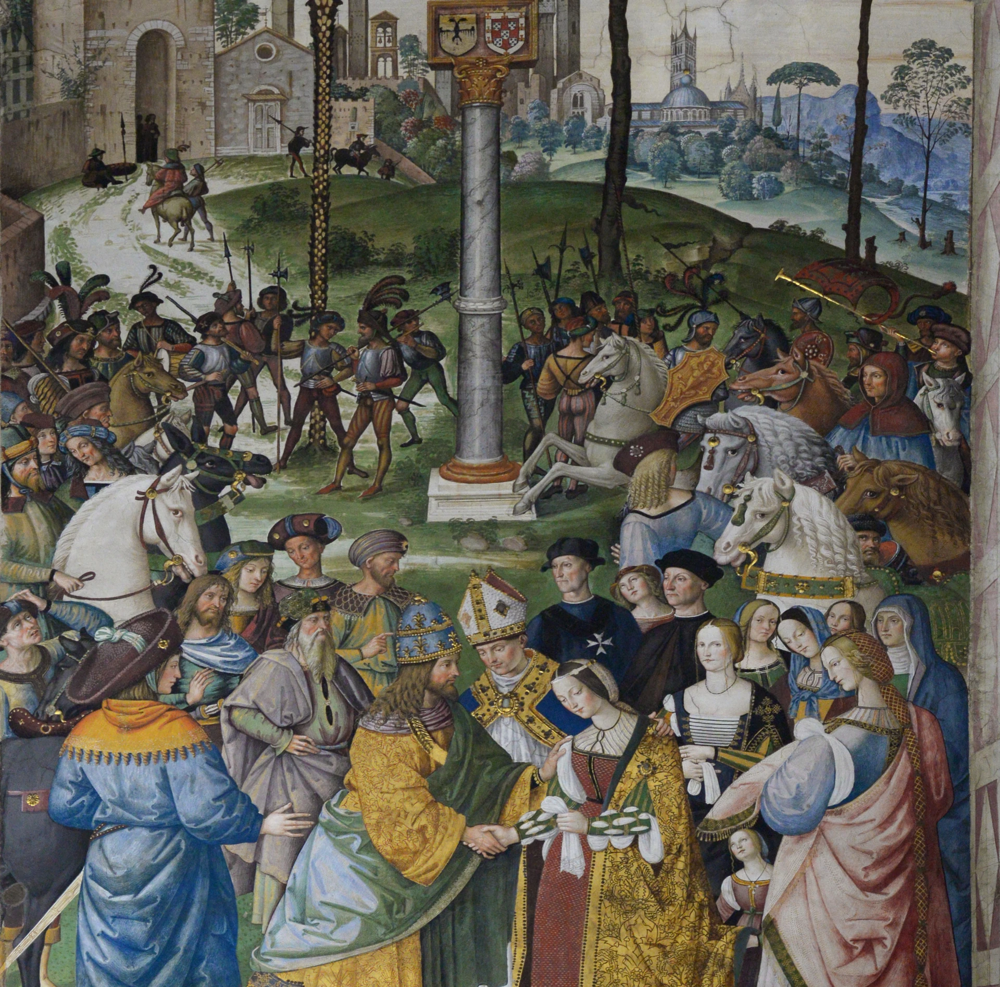

아직 펼치지 않은 카드
아직 펼치지 않은 카드
모두의 말로 찍은 성경 · 1구텐베르크 성경1455년 무렵, 마인츠의 한 인쇄소가 금속 활자로 성경을 찍어 냈어요. 이 성경에는 숫자가 들어간 별명이 있어요. 무엇일까요?도장처럼 글자를 찍어서 만든 큰 책이래!
1450년대독일 마인츠 · 프랑크푸르트
구텐베르크 성경
1450년대 독일 마인츠에서, 손으로 베끼지 않고 쇠 글자로 찍은 성경이 나왔어요. 강철에 새긴 글자 하나가 수백 개의 납 활자가 되고, 활자가 한 줄씩 모여 두 단 42줄의 한 쪽이 되었어요. 그 차례를 하나씩 따라가 봐요.
도장처럼 쇠로 글자를 만들어 꾹 찍었대. 글자 하나가 책 한 쪽이 되기까지, 같이 만들어 볼까?
검수 전 시안이에요(기준서 1판). 인쇄소의 차례는 도서관·박물관의 설명을 따랐고, 구텐베르크가 활자를 정확히 어떻게 부었는지는 아직 연구 중이라고 밝혔어요. 인쇄 차례 그림은 이 안내서가 그렸어요. 상상은 ‘눈 감고 상상해 보기’에만 썼어요.
시안 확인용카드 단계 미리 보기
1
쇠로 만든 글자
1450년대 마인츠에서 요하네스 구텐베르크(Johannes Gutenberg)는 책을 손으로 베끼는 대신 찍어 내는 일을 했어요. 1455년 11월 6일 마인츠에서 쓴 한 공증 문서(공증인이 증언을 받아 적은 문서)는 이 일을 ‘책 만드는 일’이라고 불러요.
그 문서에는 돈을 댄 요한 푸스트(Johann Fust)가 구텐베르크에게 돈을 돌려 달라며 다툰 일이 적혀 있어요. 그 일에 든 것으로 종이와 양피지, 먹, 그리고 이름을 밝히지 않은 장치가 나와요.


구텐베르크의 인쇄소를 그린 그림은 남아 있지 않아요. 위의 두 그림은 100여 년 뒤인 1568년, 요스트 암만(Jost Amman)이 새긴 목판화예요. 왼쪽은 화로 곁에서 녹인 쇠를 작은 틀에 붓는 활자공이에요. 오른쪽 인쇄소에서는 창가의 두 사람이 활자를 짜고, 앞의 두 사람이 먹을 바르고 종이를 얹어요.
쇠로 글자를 만들어 도장처럼 찍었대. 오른쪽 그림에서 먹을 바르는 사람을 찾아볼까?
물어보기도장을 찍어 본 적 있어? 무엇을 찍었어?
2
글자 하나가 한 쪽이 되기까지
구텐베르크가 찾은 것은 같은 글자를 수백, 수천 개 똑같이 만들어 내는 길이었어요. 강철 도장(펀치), 구리 틀(모형), 손 주형이 그 길이에요. 아래 단추를 누를 때마다 한 차례씩 해 볼 수 있어요.
구텐베르크가 남긴 설명서는 없어요. 이 차례는 뒷날 인쇄소의 기록과 남은 책을 바탕으로 도서관과 박물관이 설명하는 방법이에요. 활자를 정확히 어떻게 부었는지는 지금도 연구가 이어지고 있어요.
단추를 누를 때마다 한 차례씩 만들어져요. 글자 하나가 거꾸로, 바로, 다시 거꾸로 되었다가 마지막에 종이 위에 바로 서는 것을 눈여겨보세요.
이 안내서가 그린 인쇄 차례 · 미국 의회도서관 블로그(2024)와 모건 도서관의 설명을 바탕으로 · 글자는 알아보기 쉽게 오늘 글꼴로 그렸어요
글자 하나의 모습
- 강철 끝: 거꾸로 볼록
- 구리 틀: 바로 오목
- 납 활자: 거꾸로 볼록
- 종이: 바로 선 글자
- 붉은 제목: 손글씨
다 만들었어요. 강철에 거꾸로 새긴 글자 하나가, 구리 틀과 납 활자를 거쳐 종이 위에 바로 섰어요.
쇠 막대에 글자를 거꾸로 새기고, 구리에 꾹! 그 틀에 녹인 쇠를 부으면 글자가 하나 생겨.
물어보기도장 글자는 왜 거꾸로 새겨야 할까?
3
40줄에서 42줄로
네 사람이 성경을 거의 같은 네 부분으로 나누어 한꺼번에 짰다고 봐요. 처음에는 한 단에 40줄을 넣다가, 글자 높이를 조금 줄여 42줄로 바꾸었어요.
열한 묶음쯤 찍었을 때 찍을 부수를 늘리기로 하고, 이미 찍은 묶음은 다시 짜서 찍었어요. 그렇게 종이 책이 적어도 120부, 양피지 책이 40부쯤 나왔다고 봐요. 한 질은 큰 종이 643장으로, 두 권으로 묶게 만들었어요.
붉은 제목도 처음에는 찍으려 했어요. 하지만 두 번 찍는 데 손이 너무 많이 가서 그만두었어요. 그래서 붉은 제목과 머리글자는 사람이 손으로 써넣었어요. 위 사진은 뉴욕 공공도서관의 레녹스 본이에요. 오른쪽 쪽의 붉은 글씨와 푸른 머리글자도 그렇게 들어갔어요.
처음엔 40줄, 나중엔 42줄! 빨간 글씨는 사람이 손으로 썼대.
물어보기사진에서 빨간 글씨를 몇 군데 찾을 수 있어?
4
안경 없이도
1454년 10월, 프랑크푸르트에서 제국 회의가 열렸어요. 오스만 제국에 맞설 일을 의논하는 자리였어요. 그 무렵 프랑크푸르트에서 한 ‘놀라운 사람’이 여러 권의 성경에서 갓 찍은 낱장 묶음을 사람들에게 보여 주었어요.
회의에서 황제를 대신해 연설한 에네아 실비오 피콜로미니(Enea Silvio Piccolomini, 뒷날 교황 비오 2세)는 이듬해 3월 12일, 비너노이슈타트에서 로마의 후안 데 카르바할 추기경에게 편지를 썼어요.

“저는 다 만든 성경은 보지 못했고, 여러 권에서 나온 낱장 묶음만 보았습니다. 글씨가 아주 깨끗하고 바르며 틀린 데가 없어서, 추기경님께서도 애쓰지 않고 안경 없이도 읽으실 수 있을 것입니다.”
피콜로미니가 카르바할 추기경에게 보낸 편지(1455년 3월 12일) · 에릭 화이트의 영어 번역(2025)을 이 안내서가 옮김
위 벽화는 50여 년 뒤 핀투리키오(Pinturicchio)가 시에나 대성당 도서관에 그린 피콜로미니의 모습이에요. 가운데 주교관을 쓴 사람이 그예요. 황제 프리드리히 3세에게 신부가 될 포르투갈의 엘레오노르를 소개하는 장면이에요.
1454년 프랑크푸르트에서 갓 찍은 낱장 묶음을 본 사람이라면, 무엇부터 물어볼까요?
이탈리아에서 온 주교님이 갓 찍은 성경을 보고 편지를 썼대. 글씨가 아주 깨끗했대!
물어보기안경 없이도 읽을 수 있는 글씨는 어떤 글씨일까?
눈 감고 상상해 보기
창 너머로 흐린 빛이 들어와요. 축축한 종이 냄새와 기름 먹 냄새가 섞여 있어요. 나무 나사가 삐걱 돌아가고, 손잡이를 당겼다 놓는 소리가 나요. 종이를 천천히 들어 올리자, 까만 글자 두 단이 반짝여요.
눈을 감아 봐. 끼익, 나무 나사가 돌아가. 종이를 살짝 들어 올리면, 까만 글자가 반짝!
나의 자리
압착기 손잡이를 당긴 뒤 첫 쪽을 들어 올리는 사람 곁에 서 있다면, 무엇을 묻고 싶나요?
도장을 꾹 찍고 들어 올릴 때처럼, 첫 쪽을 들어 올리면 어떤 기분일까?
마음에 닿는 한 줄을 고르거나 직접 써 보세요. 한 줄을 남기면 이 자리의 도장이 찍혀요. 이 기기에만 저장돼요.
더 깊이
궁금한 칸만 펼쳐 읽어도 괜찮아요.
알고 보면
펀치와 구리 틀 펀치는 강철 막대 끝에 글자를 거꾸로 새긴 도장이에요. 이것을 무른 구리에 두드려 박은 것이 구리 틀(모형, 매트릭스)이에요. 펀치와 틀만 있으면 같은 활자를 얼마든지 다시 부을 수 있어서, 활자보다 더 귀하게 여겼어요.
270가지 글자 손으로 쓴 책처럼 보이게, 붙여 쓰는 글자와 줄여 쓰는 글자까지 따로 만들었어요. 모건 도서관은 한 벌에 270가지쯤의 글자가 있었다고 해요. 글꼴은 가장 격식 있는 예배용 책의 글씨를 닮은 네모난 고딕 글자예요.
기름 먹 손으로 쓸 때의 먹은 물로 개어서 쇠 활자에 잘 묻지 않았어요. 구텐베르크는 기름을 섞은 먹을 만들었고, 과학자들은 그 먹에서 남다른 금속 성분을 찾아냈어요.
나사 압착기 구텐베르크의 인쇄기는 남아 있지 않아요. 포도주를 짜거나 종이를 누르던 나사 압착기를 고쳐 썼을 거라고 봐요.
기록마다 다른 점
몇 부를 찍었나 피콜로미니는 158권이라는 말과 180권이라는 말을 함께 들었다고 적었어요. 니덤과 화이트는 종이 책이 적어도 120부, 양피지 책이 40부쯤이라고 보고, 다른 학자들은 160~185부쯤으로 셈해요.
어떻게 부었나 펀치·구리 틀·손 주형으로 부었다는 설명이 오래 이어져 왔어요. 하지만 모건 도서관은 최근 연구가 구텐베르크의 활자를 정확히 어떻게 부었는지 다시 묻고 있다고 해요.
빌린 돈인가, 함께 넣은 돈인가 1455년 공증 문서에서 푸스트는 빌려준 돈이라고 했고, 구텐베르크는 둘이 함께 벌인 일에 넣은 돈이 대부분이라고 맞섰어요.
직접 가 보기
확인한 날 · 2026년 11월 18일 · 바뀌기 쉬운 정보라 정기적으로 다시 확인해요
독일 마인츠 구텐베르크 박물관은 새 건물을 짓는 동안, 2024년 11월 말부터 자연사 박물관 건물에서 임시 전시를 하고 있어요. 보물실에서는 구텐베르크 성경 두 권을 견주어 볼 수 있어요. 관람 시간은 가기 전에 누리집에서 확인하세요.
사진의 레녹스 본은 뉴욕 공공도서관의 희귀본실이 가지고 있어요. 전시 여부는 가기 전에 확인하세요.
일곱 차례 끝까지 금박
글자 하나가 책 한 쪽이 되기까지, 일곱 차례를 끝까지 해 보면 카드에 금박이 입혀져요.
일곱 차례를 끝까지 해 보기
그 자리의 물음 채색
둘 가운데 하나만 해도 카드가 채색돼요.
1454년 프랑크푸르트의 낱장 앞에서 하나 물어보기
아이와 함께 ‘영화처럼 보기’를 끝까지 보기
근거 보기 (10)
- 존 갠디(2025), 존 라일랜즈 도서관 블로그 — 피콜로미니의 1455년 3월 12일 편지(비너노이슈타트에서 카르바할 추기경에게): 프랑크푸르트의 ‘놀라운 사람’, 다 만든 성경은 못 보고 여러 권의 낱장 묶음만 봄, 아주 깨끗하고 바르며 틀린 데 없음, 안경 없이도, 158권·180권, 사 보겠다는 말과 먼 거리·다 정해진 살 사람(에릭 화이트 2025 번역)
- 폴 니덤·에릭 화이트, 「Gutenberg & After」(프린스턴 대학 도서관 2019 전시 · 옥스퍼드 Cabinet) — 네모난 고딕 글꼴, 큰 종이 643장·두 권, 40줄에서 글자 높이를 줄여 42줄, 네 식자공, 열한 묶음 뒤 부수를 늘려 다시 찍음, 종이 120부 이상·양피지 40부쯤, 1455년 11월 6일 마인츠 공증 문서(푸스트의 소송, ‘책 만드는 일’, 종이·양피지·먹·이름 없는 장치, 구텐베르크의 반론), 지난가을 프랑크푸르트의 ‘놀라운 사람’
- 패트릭 헤이스팅스(2024), 미국 의회도서관 블로그 「Just My Type」 — 강철 펀치에 거꾸로 새기고 둘레를 갈아 냄, 구리에 박은 틀은 바로 읽힘, 손 주형에 틀을 끼움, 주로 납인 쇠, 같은 활자를 여러 번, 펀치와 틀이 활자보다 귀함, 칸 나눈 상자
- 모건 도서관 「The Invention of Printing」 — 활자를 붓고 한 자·한 줄씩 짜는 기술, 정확히 어떻게 부었는지 최근 연구가 물음, 270가지쯤의 글자, 기름 먹과 금속 성분, 나사 압착기(포도주·제지), 붉은 제목을 찍으려다 그만둠
- 미하엘 폰 코타쇤베르크 엮음, 피콜로미니 연설 「Constantinopolitana clades」(1454년 10월 15일 프랑크푸르트) — 1454년의 세 제국 회의, 황제의 대변인 피콜로미니, 오스만에 맞설 십자군 의논
- 웰컴 컬렉션: 요스트 암만 「Der Buchdrucker」(1568) — 창가에서 활자를 짜는 두 사람, 종이를 준비하며 먹을 바르는 두 인쇄공, 찍은 종이와 안 찍은 종이 더미
- 웰컴 컬렉션: 요스트 암만 「Der Schrifftgiesser」(1568) — 라틴·고딕·그리스 활자를 만든다는 글, 오른쪽의 쇠 녹이는 화로
- 마인츠시: 구텐베르크 박물관 — 2024년 10월 초 옛 건물을 닫고 11월 말 자연사 박물관 건물에서 임시 전시, 보물실의 구텐베르크 성경 두 권(2026년 11월 18일 확인)
- 위키미디어 공용: 핀투리키오 벽화 사진 정보(피콜로미니가 프리드리히 3세에게 엘레오노르를 소개함, 시에나 대성당 피콜로미니 도서관), 레녹스 본 사진(뉴욕 공공도서관 희귀본실), 암만의 목판화
- 위키백과 Gutenberg Bible — 길잡이로만(160~185부라는 셈)
그림·사진·소리 출처
‘처음 만나는 기독교 문화’의 깊은 카드예요. 카드 단계와 남긴 글은 이 기기에만 저장돼요.